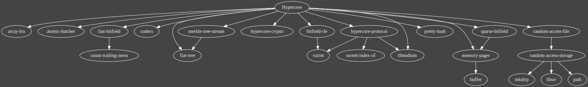

<link href="https://fonts.googleapis.com/css?family=Nanum+Gothic+Coding:400,700|Open+Sans:400,800" rel="stylesheet">
<link href="index.css" rel="stylesheet">

<header>
  
  <h1>DAT for C++</h1>
</header>

<main>
  <div class="row">
    <div class="half">
      <h2 id="faq">FAQ</h2>
      <p><b>Why not Rust?</b></p>
      <p><i>There is a <a href="http://github.com/datrs">Rust</a> version, use it.</i></p>
      <br/>
      <p><b>Why C++17/2a?</b></p>
      <p><i>The other option is Rust.</i></p>
      <br/>
      <p><b>Why a custom build-system/package-manager?</b></p>
      <p><i>C++ build tools and package managers are often separate concerns.
        Getting them to function in concert compounds their complexity.
        They also try to solve an ambitious number of use cases that aren't
        relevant to this project.</i></p>
      <br/>
      <p><b>Do I need to use this build-system/package-manager?</b></p>
      <p><i>No. The finished product is a static or shared library that
        can be used without needing to care about how this project is
        structured internally.</i></p>
      <br/>
      <p><b>Can I contibute to this project?</b></p>
      <p><i>Yes! We are looking for maintainers &mdash; specifically you. You're
        a particularly good engineer and we would love to work with you. &#10084;</i></p>
      <br/>
      <p><b>Where are the docs for this project?</b></p>
      <p><i>This is a work in progress, there are no official docs yet, RTC.</i></p>
      <br/>
      <p><b>Where can I learn more about how DAT works?</b></p>
      <p><i><a href="https://datprotocol.github.io/how-dat-works/">This</a> is
        a great place to start. But you can also follow
        <a href="https://github.com/datproject/dat-node/">this</a> dependency
        tree.</i></p>

    </div>
    <div class="half">
      <h2>Modules</h2>
      <h3>Hypercore</h3>
        <ul>
          <li>path 100%</li>
          <li>varint 100%</li>
          <li>eventemitter 100%</li>
          <li>flat-tree 100%</li>
          <li>memory-pager 80%</li>
          <li>sparse-bitfield 80%</li>
          <li>merkle-tree-stream 10%</li>
        </ul>
      <h3>Hyperdrive</h3>
        <ul>
          <li>hypercore</li>
          <li>append-tree</li>
          <li>random-access-file</li>
        </ul>
      <h3>Dat</h3>
        <ul>
          <li>hyperdrive</li>
        </ul>
    </div>
  </div>

  <h2 id="topology">Hypercore module topology</h2>
  <a class="image-link" href="hypercore.svg">
    
  </a>
</main>
